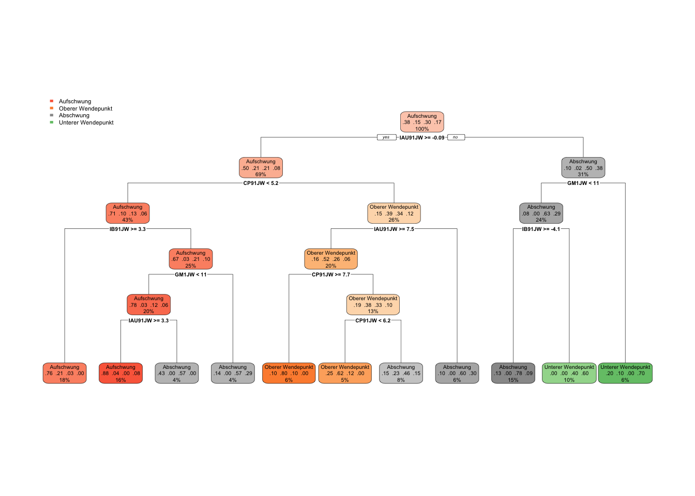
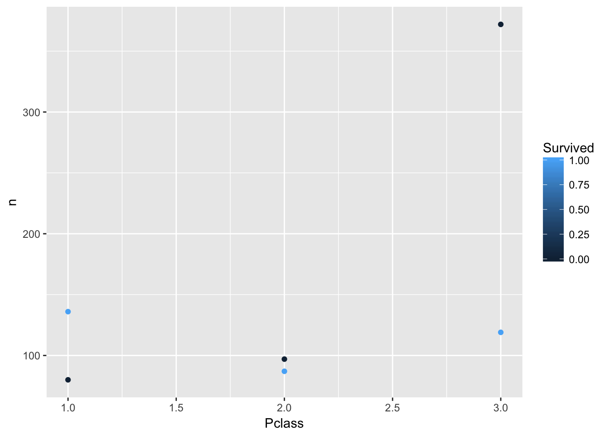
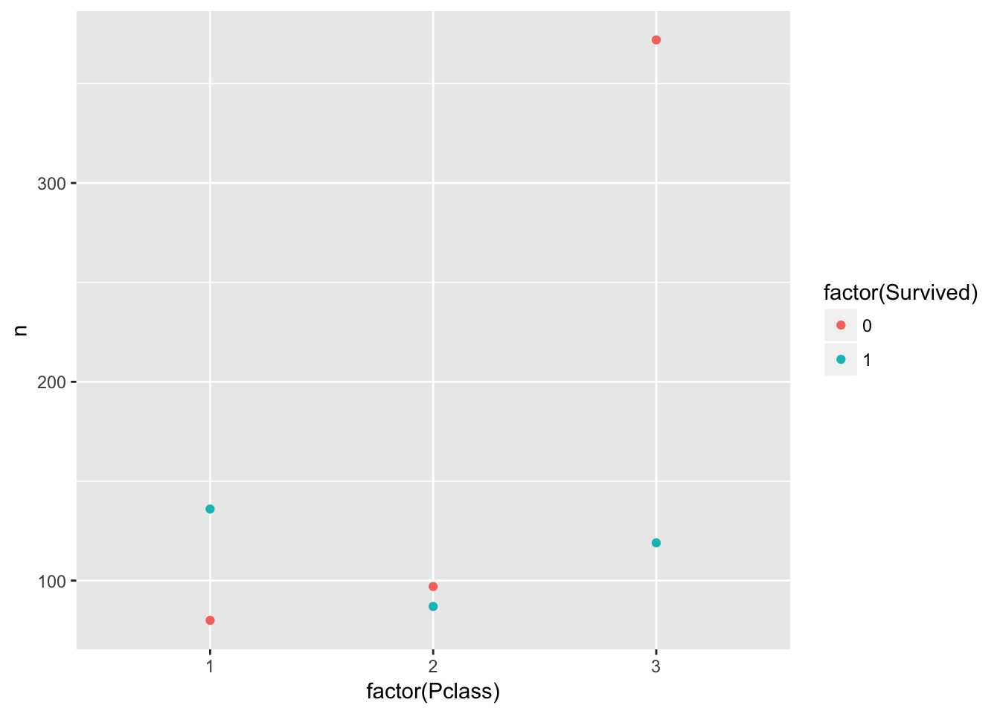
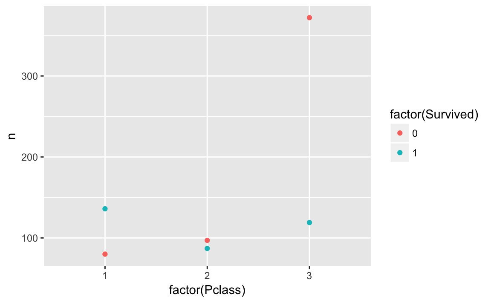

Kapitel 9 Baumbasierte Verfahren
9.1 Konjunturanalyse
Der B3 Datensatz Heilemann, U. and Münch, H.J. (1996): West German Business Cycles 1963-1994: A Multivariate Discriminant Analysis. CIRET–Conference in Singapore, CIRET–Studien 50. enthält Quartalsweise Konjunkturdaten aus (West-)Deutschland.
B3 <- read.csv2("https://goo.gl/0YCEHf")
str(B3) # Datenstruktur
#> 'data.frame': 157 obs. of 14 variables:
#> $ PHASEN : int 2 2 3 3 3 3 3 3 3 3 ...
#> $ BSP91JW : num 10.53 10.6 9.21 5.17 4.93 ...
#> $ CP91JW : num 9.31 12.66 6.55 7.87 8.6 ...
#> $ DEFRATE : num 0.05 0.06 0.05 0.05 0.04 0.04 0.04 0.03 0.03 0 ...
#> $ EWAJW : num 5.7 5.2 4.8 3.3 2.1 3.2 2.5 2.7 3 0.3 ...
#> $ EXIMRATE: num 3.08 1.96 2.82 3.74 4.16 2.9 3.65 4.57 4.37 2.89 ...
#> $ GM1JW : num 11.15 11.03 10.04 8.33 7.69 ...
#> $ IAU91JW : num 23.56 12.72 11.52 0.85 -2.08 ...
#> $ IB91JW : num 14.69 24.95 14.9 7.55 3.23 ...
#> $ LSTKJW : num 3 2.36 3.39 5.3 6.91 1.03 3.73 6.2 4.12 7.94 ...
#> $ PBSPJW : num 2.89 2.59 3.01 3.03 3.46 1.95 3.18 3.98 3.29 5.63 ...
#> $ PCPJW : num 1.91 2.2 3.09 2.08 1.48 1.65 1.47 3.29 3.59 4.19 ...
#> $ ZINSK : num 6.27 4.6 6.19 6.71 7.1 4.96 5.21 4.83 4.5 3.83 ...
#> $ ZINSLR : num 3.21 3.54 3.22 3.37 3.14 4.95 3.82 3.09 3.91 1.47 ...
head(B3); tail(B3)
#> PHASEN BSP91JW CP91JW DEFRATE EWAJW EXIMRATE GM1JW IAU91JW IB91JW LSTKJW
#> 1 2 10.53 9.31 0.05 5.7 3.08 11.15 23.56 14.69 3.00
#> 2 2 10.60 12.66 0.06 5.2 1.96 11.03 12.72 24.95 2.36
#> 3 3 9.21 6.55 0.05 4.8 2.82 10.04 11.52 14.90 3.39
#> 4 3 5.17 7.87 0.05 3.3 3.74 8.33 0.85 7.55 5.30
#> 5 3 4.93 8.60 0.04 2.1 4.16 7.69 -2.08 3.23 6.91
#> 6 3 8.39 5.62 0.04 3.2 2.90 6.62 -3.76 14.58 1.03
#> PBSPJW PCPJW ZINSK ZINSLR
#> 1 2.89 1.91 6.27 3.21
#> 2 2.59 2.20 4.60 3.54
#> 3 3.01 3.09 6.19 3.22
#> 4 3.03 2.08 6.71 3.37
#> 5 3.46 1.48 7.10 3.14
#> 6 1.95 1.65 4.96 4.95
#> PHASEN BSP91JW CP91JW DEFRATE EWAJW EXIMRATE GM1JW IAU91JW IB91JW
#> 152 3 -1.27 1.29 -4.87 -1.97 6.03 9.79 -18.29 1.73
#> 153 3 -2.13 -0.57 -2.98 -2.05 7.59 0.72 -15.82 -3.23
#> 154 3 1.39 2.33 -2.86 -1.84 7.49 11.33 -10.59 4.62
#> 155 4 1.63 0.64 1.20 -1.58 7.75 11.38 -4.90 3.62
#> 156 1 1.40 0.57 -3.56 -1.34 5.58 9.53 -0.76 2.19
#> 157 1 1.83 -0.08 -2.22 -0.93 7.50 15.20 2.75 6.12
#> LSTKJW PBSPJW PCPJW ZINSK ZINSLR
#> 152 1.08 2.73 2.98 6.83 3.55
#> 153 1.67 2.67 3.31 6.35 3.05
#> 154 -0.12 2.66 2.94 5.88 3.17
#> 155 -1.81 1.77 2.58 5.29 4.82
#> 156 -1.54 1.85 2.60 5.01 5.27
#> 157 -0.92 1.79 2.49 5.28 5.62Dabei sind folgende Variablen enthalten:
- Bruttosozialprodukt (real):
BSP91JW - Privater Verbrauch (real):
CP91JW - Anteil Staatsdefizit am Bruttosozialprodukt (%):
DEFRATE - Abhängig Erwerbstätige:
EWAJW - Anteil Außenbeitrag am Bruttosozialprodukt (%):
EXIMRATE - Geldmenge M1:
GM1JW - Investitionen in Ausrüstungsgüter (real):
IAU91JW - Investitionen in Bauten (real):
IB91JW - Lohnstückkosten:
LSTKJW - Preisindex des Bruttosozialprodukts:
PBSPJW - Preisindex des privaten Verbrauchs:
PCPJW - Kurzfristiger Zinssatz (nominal):
ZINSK - Langfristiger Zinssatz (real):
ZINSLR - Konjunkturphase: 1. Aufschwung, 2. Oberer Wendepunkt, 3. Abschwung,4. Unterer Wendepunkt:
PHASEN
Variablen mit der Endung JW beziehen sich auf die jährliche Veränderung.
9.2 Regressionsbäume
Um einen Regressionsbaum zu erzeugen, muss zunächst das Zusatzpaket rpart geladen werden:
library(rpart)Um z. B. die Veränderung des Bruttosozialprodukt als Funktion von Privater Verbrauch, Investitionen in Ausrüstungsgüter, Investitionen in Bauten und Geldmenge M1 als Regressionsbaum zu modellieren reicht der Befehl
regbaum <- rpart(BSP91JW ~ CP91JW + IAU91JW + IB91JW + GM1JW, data=B3)Um das Ergebnis auszugeben genügt:
regbaum
#> n= 157
#>
#> node), split, n, deviance, yval
#> * denotes terminal node
#>
#> 1) root 157 1380.0 3.5000
#> 2) CP91JW< 3.71 79 380.0 1.5200
#> 4) IAU91JW< -0.365 38 120.0 -0.0379
#> 8) IB91JW< -2.22 20 45.1 -0.9020 *
#> 9) IB91JW>=-2.22 18 43.9 0.9220 *
#> 5) IAU91JW>=-0.365 41 81.6 2.9600
#> 10) IB91JW< 2.42 22 29.5 2.2100 *
#> 11) IB91JW>=2.42 19 25.0 3.8400 *
#> 3) CP91JW>=3.71 78 378.0 5.5000
#> 6) IAU91JW< 11.3 50 142.0 4.5700
#> 12) IB91JW< 3.2 22 40.0 3.5500 *
#> 13) IB91JW>=3.2 28 61.3 5.3700 *
#> 7) IAU91JW>=11.3 28 114.0 7.1700
#> 14) IB91JW< 7.55 17 51.2 6.2200 *
#> 15) IB91JW>=7.55 11 23.7 8.6400 *Lesebeispiel: Wenn CP91JW>=3.705 und IAU91JW>=11.335 und IB91JW>=7.55 liegt, dann liegt die durchschnittliche Veränderung des BSP91JW bei 8.639. 11 Beobachtungen erfüllen die Kriterien der unabhängigen Variablen
Bzw. um den Baum zu zeichnen
par(xpd = TRUE) # Grafikparameter der sicherstellt, dass alles ins Bild passt
plot(regbaum, compress = TRUE) # Baum zeichnen
text(regbaum) # Baum beschriften
Eine deutlich schönere Ausgabe erhält man z. B. mit dem Zusatzpaket rpart.plot, welches man einmalig über
install.packages("rpart.plot")installieren muss und dann benutzen kann.
Zunächst laden
library(rpart.plot)und dann zeichnen:
rpart.plot(regbaum)
9.3 Kreuzvalidierung
9.3.1 Anpassungsgüte
Wie gut ist das Modell? Über predict können die Punktprognosen berechnet werden:
head(predict(regbaum))
#> 1 2 3 4 5 6
#> 8.64 8.64 8.64 5.37 5.37 5.37Diese werden mit den beobachteten Werten verglichen:
head(B3$BSP91JW)
#> [1] 10.53 10.60 9.21 5.17 4.93 8.39Der Mean Squared Error ist dann
baummse <- mean( (predict(regbaum) - B3$BSP91JW)^2 )
baummse
#> [1] 2.04Vergleichen wir das Ergebnis mit dem einer linearen Regression
reglm <- lm(BSP91JW ~ CP91JW + IAU91JW + IB91JW + GM1JW, data=B3)
summary(reglm)
#>
#> Call:
#> lm(formula = BSP91JW ~ CP91JW + IAU91JW + IB91JW + GM1JW, data = B3)
#>
#> Residuals:
#> Min 1Q Median 3Q Max
#> -3.048 -0.880 -0.057 0.801 3.674
#>
#> Coefficients:
#> Estimate Std. Error t value Pr(>|t|)
#> (Intercept) 1.22442 0.26280 4.66 6.9e-06 ***
#> CP91JW 0.38729 0.05846 6.63 5.7e-10 ***
#> IAU91JW 0.12752 0.01634 7.80 9.0e-13 ***
#> IB91JW 0.13880 0.01719 8.08 1.9e-13 ***
#> GM1JW -0.00996 0.02676 -0.37 0.71
#> ---
#> Signif. codes: 0 '***' 0.001 '**' 0.01 '*' 0.05 '.' 0.1 ' ' 1
#>
#> Residual standard error: 1.37 on 152 degrees of freedom
#> Multiple R-squared: 0.792, Adjusted R-squared: 0.786
#> F-statistic: 145 on 4 and 152 DF, p-value: <2e-16Der MSE der Linearen Regression liegt bei
lmmse <- mean( (predict(reglm) - B3$BSP91JW)^2 )
lmmse
#> [1] 1.83Der Baum ist einfacher und weniger flexibel, aber auch schlechter im Bezug auf die Anpassungsgüte.
9.3.2 Prognosegüte
Für eine k=3 fache Kreuzvalidierung müssen 3 Testdatensätze erzeugt werden.
Zunächst wird dafür ein Aufteilungsvektor gebildet:
aufteilung <- rep(1:3, length.out=nrow(B3))und dann wird aufgeteilt:
test1 <- B3[aufteilung==1,]
train1 <- B3[aufteilung!=1,]
test2 <- B3[aufteilung==2,]
train2 <- B3[aufteilung!=2,]
test3 <- B3[aufteilung==3,]
train3 <- B3[aufteilung!=3,]Anschließend werden die Modelle auf den Trainingsdaten geschätzt, und auf den Testdaten überprüft:
# Runde 1
b1 <- rpart(BSP91JW ~ CP91JW + IAU91JW + IB91JW + GM1JW, data=train1)
l1 <- lm(BSP91JW ~ CP91JW + IAU91JW + IB91JW + GM1JW, data=train1)
mseb1 <- mean( (predict(b1, newdata = test1) - test1$BSP91JW)^2 )
msel1 <- mean( (predict(l1, newdata = test1) - test1$BSP91JW)^2 )
# Runde 2
b2 <- rpart(BSP91JW ~ CP91JW + IAU91JW + IB91JW + GM1JW, data=train2)
l2 <- lm(BSP91JW ~ CP91JW + IAU91JW + IB91JW + GM1JW, data=train2)
mseb2 <- mean( (predict(b2, newdata = test2) - test2$BSP91JW)^2 )
msel2 <- mean( (predict(l2, newdata = test2) - test2$BSP91JW)^2 )
# Runde 3
b3 <- rpart(BSP91JW ~ CP91JW + IAU91JW + IB91JW + GM1JW, data=train3)
l3 <- lm(BSP91JW ~ CP91JW + IAU91JW + IB91JW + GM1JW, data=train3)
mseb3 <- mean( (predict(b3, newdata = test3) - test3$BSP91JW)^2 )
msel3 <- mean( (predict(l3, newdata = test3) - test3$BSP91JW)^2 )
# Ergebnisse zusammenfassen
msecvb <- c(mseb1, mseb2, mseb3)
msecvl <- c(msel1, msel2, msel3)
# Mittelwert des Prognose MSE
mean(msecvb)
#> [1] 3.62
mean(msecvl)
#> [1] 1.99Bei den vorliegenden Daten ist also ein lineares Modell dem Baummodell im Bezug auf den MSE überlegen.
Hinweis: In der Praxis führt man die Aufteilung nicht manuell sondern innerhalb von Schleifen durch.
9.4 Klassifikationbäume
Untersuchen wir, ob makroökonomische Kennzahlen geeignet sind, die Konjunkturphasen zu unterscheiden. Zunächst stellen wir fest, dass die eigentlich kategorielle Variable PHASEN hier numerisch kodiert wurde, was aber schnell verwirren würde.
typeof(B3$PHASEN)
#> [1] "integer"Typänderung zu factor geht einfach:
B3$PHASEN <- as.factor(B3$PHASEN)Wenn wir die einzelnen levels des Faktors als numerische Werte verwenden wollen würde man den Befehl as.numeric() verwenden. Aber sicherheitshalber vorher über levels() gucken, ob die Reihenfolge auch stimmt.
Um die Interpretation zu erleichtern können wir hier einfach die Faktorstufe umbenennen.
levels(B3$PHASEN) <- c("Aufschwung", "Oberer Wendepunkt",
"Abschwung", "Unterer Wendepunkt")Um z. B. die Konjunkturphase als Funktion von Privater Verbrauch, Investitionen in Ausrüstungsgüter, Investitionen in Bauten und Geldmenge M1 als Regressionsbaum zu modellieren reicht jetzt der Befehl
klassbaum <- rpart(PHASEN ~ CP91JW + IAU91JW + IB91JW + GM1JW, data=B3)Um das Ergebnis auszugeben genügt:
klassbaum
#> n= 157
#>
#> node), split, n, loss, yval, (yprob)
#> * denotes terminal node
#>
#> 1) root 157 98 Aufschwung (0.3758 0.1529 0.2994 0.1720)
#> 2) IAU91JW>=-0.09 109 55 Aufschwung (0.4954 0.2110 0.2110 0.0826)
#> 4) CP91JW< 5.19 68 20 Aufschwung (0.7059 0.1029 0.1324 0.0588)
#> 8) IB91JW>=3.32 29 7 Aufschwung (0.7586 0.2069 0.0345 0.0000) *
#> 9) IB91JW< 3.32 39 13 Aufschwung (0.6667 0.0256 0.2051 0.1026)
#> 18) GM1JW< 11 32 7 Aufschwung (0.7813 0.0312 0.1250 0.0625)
#> 36) IAU91JW>=3.25 25 3 Aufschwung (0.8800 0.0400 0.0000 0.0800) *
#> 37) IAU91JW< 3.25 7 3 Abschwung (0.4286 0.0000 0.5714 0.0000) *
#> 19) GM1JW>=11 7 3 Abschwung (0.1429 0.0000 0.5714 0.2857) *
#> 5) CP91JW>=5.19 41 25 Oberer Wendepunkt (0.1463 0.3902 0.3415 0.1220)
#> 10) IAU91JW>=7.49 31 15 Oberer Wendepunkt (0.1613 0.5161 0.2581 0.0645)
#> 20) CP91JW>=7.69 10 2 Oberer Wendepunkt (0.1000 0.8000 0.1000 0.0000) *
#> 21) CP91JW< 7.69 21 13 Oberer Wendepunkt (0.1905 0.3810 0.3333 0.0952)
#> 42) CP91JW< 6.2 8 3 Oberer Wendepunkt (0.2500 0.6250 0.1250 0.0000) *
#> 43) CP91JW>=6.2 13 7 Abschwung (0.1538 0.2308 0.4615 0.1538) *
#> 11) IAU91JW< 7.49 10 4 Abschwung (0.1000 0.0000 0.6000 0.3000) *
#> 3) IAU91JW< -0.09 48 24 Abschwung (0.1042 0.0208 0.5000 0.3750)
#> 6) GM1JW< 11.4 38 14 Abschwung (0.0789 0.0000 0.6316 0.2895)
#> 12) IB91JW>=-4.08 23 5 Abschwung (0.1304 0.0000 0.7826 0.0870) *
#> 13) IB91JW< -4.08 15 6 Unterer Wendepunkt (0.0000 0.0000 0.4000 0.6000) *
#> 7) GM1JW>=11.4 10 3 Unterer Wendepunkt (0.2000 0.1000 0.0000 0.7000) *Lesebeispiel: Wenn IAU91JW< -0.09 und GM1JW>=11.355 liegt, dann ist der Untere Wendepunkt die häufigste Merkmalsausprägung von PHASEN (relative Häufigkeit von PHASEN=4 hier: 0.7) 10 Beobachtungen erfüllen die Kriterien der unabhängigen Variablen.
par(xpd = TRUE) # Grafikparameter der sicherstellt, dass alles ins Bild passt
plot(klassbaum, compress = TRUE) # Baum zeichnen
text(klassbaum) # Baum beschriften
Bzw. “schöner”:
rpart.plot(klassbaum)
9.4.1 Kreuzvalidierung
Wie gut ist das Modell? Auch hier können über predict die Punktprognosen bestimmt werden:
head(predict(klassbaum, type="class"))
#> 1 2 3 4
#> Oberer Wendepunkt Oberer Wendepunkt Abschwung Abschwung
#> 5 6
#> Abschwung Abschwung
#> Levels: Aufschwung Oberer Wendepunkt Abschwung Unterer WendepunktDiese werden mit den beobachteten Werten verglichen:
head(B3$PHASEN)
#> [1] Oberer Wendepunkt Oberer Wendepunkt Abschwung Abschwung
#> [5] Abschwung Abschwung
#> Levels: Aufschwung Oberer Wendepunkt Abschwung Unterer WendepunktDie Fehlklassifikationsrate ist dann
baumer <- mean( (predict(klassbaum, type="class") != B3$PHASEN) )
baumer
#> [1] 0.293also knapp 30%.
Vergleichen kann man den Klassifikationsbaum z. B. mit der Linearen Diskriminanzanalyse. Diese ist im Paket MASS implementiert.
library(MASS)klasslda <- lda(PHASEN ~ CP91JW + IAU91JW + IB91JW + GM1JW, data=B3)
klasslda
#> Call:
#> lda(PHASEN ~ CP91JW + IAU91JW + IB91JW + GM1JW, data = B3)
#>
#> Prior probabilities of groups:
#> Aufschwung Oberer Wendepunkt Abschwung
#> 0.376 0.153 0.299
#> Unterer Wendepunkt
#> 0.172
#>
#> Group means:
#> CP91JW IAU91JW IB91JW GM1JW
#> Aufschwung 3.55 6.8936 3.40 8.61
#> Oberer Wendepunkt 6.43 11.3604 6.83 11.02
#> Abschwung 3.66 -0.0034 1.67 6.84
#> Unterer Wendepunkt 2.62 -1.9393 -1.49 9.61
#>
#> Coefficients of linear discriminants:
#> LD1 LD2 LD3
#> CP91JW 0.1583 -0.52094 0.0758
#> IAU91JW -0.1409 0.06865 -0.0275
#> IB91JW -0.0478 0.00242 -0.0457
#> GM1JW -0.0203 0.08559 0.2245
#>
#> Proportion of trace:
#> LD1 LD2 LD3
#> 0.645 0.230 0.125
ldaer <- mean( (predict(klasslda)$class != B3$PHASEN) )
ldaer
#> [1] 0.414Im Bezug auf die Klassifikation scheint der Baum in der Anpassungsgüte besser als die Lineare Diskriminanzanalyse zu sein. Aber wie sieht es kreuzvalidiert, d. h. in der Prognose aus?
Zunächst wird wieder dafür ein Aufteilungsvektor gebildet:
aufteilung <- rep(1:3, length.out=nrow(B3))und dann wird aufgeteilt:
test1 <- B3[aufteilung==1,]
train1 <- B3[aufteilung!=1,]
test2 <- B3[aufteilung==2,]
train2 <- B3[aufteilung!=2,]
test3 <- B3[aufteilung==3,]
train3 <- B3[aufteilung!=3,]# Runde 1
b1 <- rpart(PHASEN ~ CP91JW + IAU91JW + IB91JW + GM1JW, data=train1)
l1 <- lda(PHASEN ~ CP91JW + IAU91JW + IB91JW + GM1JW, data=train1)
erb1 <- mean( (predict(b1, newdata = test1, type = "class") != test1$PHASEN) )
erl1 <- mean( (predict(l1, newdata = test1)$class != test1$PHASEN) )
# Runde 2
b2 <- rpart(PHASEN ~ CP91JW + IAU91JW + IB91JW + GM1JW, data=train2)
l2 <- lda(PHASEN ~ CP91JW + IAU91JW + IB91JW + GM1JW, data=train2)
erb2 <- mean( (predict(b2, newdata = test2, type = "class") != test2$PHASEN) )
erl2 <- mean( (predict(l2, newdata = test2)$class != test2$PHASEN) )
# Runde 3
b3 <- rpart(PHASEN ~ CP91JW + IAU91JW + IB91JW + GM1JW, data=train3)
l3 <- lda(PHASEN ~ CP91JW + IAU91JW + IB91JW + GM1JW, data=train3)
erb3 <- mean( (predict(b3, newdata = test3, type = "class") != test3$PHASEN) )
erl3 <- mean( (predict(l3, newdata = test3)$class != test3$PHASEN) )
# Ergebnisse zusammenfassen
ercvb <- c(erb1, erb2, erb3)
ercvl <- c(erl1, erl2, erl3)
# Mittelwert des Prognose MSE
mean(ercvb)
#> [1] 0.49
mean(ercvl)
#> [1] 0.44In der Prognosegüte ist hier – anders als in der Anpassungsgüte – die Lineare Diskriminanzanalyse besser.
9.5 Parameter rpart
Neben dem Splitkrierium können verschiedene Parameter des Algorithmus eingestellt werden (siehe ?rpart.control), u. a.:
- minsplit: Minimale Anzahl Beobachtungen im Knoten damit Aufteilung versucht wird
- minbucket: Minimale Anzahl Beobachtungen im Blatt
- cp: Komplexitätsparameter (pruning)
- xval: Anzahl Kreuzvaliderungen (pruning)
- maxdepth: Maximale Tiefe eines Blattes
Diese können mit der Funktion train aus dem Paket caret automatisch optimiert werden.
Alternativen/ Ergänzungen zu rpart:
treepartykit- Erweiterung: Viele Bäume:
randomForest
9.6 Fallstudie: Überleben auf der Titanic
In dieser YACSDA (Yet-another-case-study-on-data-analysis) geht es um die beispielhafte Analyse nominaler Daten anhand des “klassischen” Falls zum Untergang der Titanic. Eine Frage, die sich hier aufdrängt, lautet: Kann (konnte) man sich vom Tod freikaufen, etwas polemisch formuliert. Oder neutraler: Hängt die Überlebensquote von der Klasse, in der derPassagiers reist, ab?
9.6.1 Daten und Pakete laden
library("titanic")
data(titanic_train)Man beachte, dass ein Paket nur einmalig zu installieren ist (wie jede Software). Dann aber muss das Paket bei jedem Starten von R wieder von neuem gestartet werden. Außerdem ist es wichtig zu wissen, dass das Laden eines Pakets nicht automatisch die Datensätze aus dem Paket lädt. Man muss das oder die gewünschten Pakete selber (mit data(...)) laden. Und: Der Name eines Pakets (z.B. titanic) muss nicht identisch sein mit dem oder den Datensätzen des Pakets (z.B. titanic_train).
library(tidyverse)9.6.2 Erster Blick
Werfen wir einen ersten Blick in die Daten:
# install.packages("dplyr", dependencies = TRUE) # ggf. vorher installieren
glimpse(titanic_train)
#> Observations: 891
#> Variables: 12
#> $ PassengerId <int> 1, 2, 3, 4, 5, 6, 7, 8, 9, 10, 11, 12, 13, 14, 15,...
#> $ Survived <int> 0, 1, 1, 1, 0, 0, 0, 0, 1, 1, 1, 1, 0, 0, 0, 1, 0,...
#> $ Pclass <int> 3, 1, 3, 1, 3, 3, 1, 3, 3, 2, 3, 1, 3, 3, 3, 2, 3,...
#> $ Name <chr> "Braund, Mr. Owen Harris", "Cumings, Mrs. John Bra...
#> $ Sex <chr> "male", "female", "female", "female", "male", "mal...
#> $ Age <dbl> 22, 38, 26, 35, 35, NA, 54, 2, 27, 14, 4, 58, 20, ...
#> $ SibSp <int> 1, 1, 0, 1, 0, 0, 0, 3, 0, 1, 1, 0, 0, 1, 0, 0, 4,...
#> $ Parch <int> 0, 0, 0, 0, 0, 0, 0, 1, 2, 0, 1, 0, 0, 5, 0, 0, 1,...
#> $ Ticket <chr> "A/5 21171", "PC 17599", "STON/O2. 3101282", "1138...
#> $ Fare <dbl> 7.25, 71.28, 7.92, 53.10, 8.05, 8.46, 51.86, 21.07...
#> $ Cabin <chr> "", "C85", "", "C123", "", "", "E46", "", "", "", ...
#> $ Embarked <chr> "S", "C", "S", "S", "S", "Q", "S", "S", "S", "C", ...9.6.3 Welche Variablen sind interessant?
Von 12 Variablen des Datensatzes interessieren uns offenbar Pclass und Survived; Hilfe zum Datensatz kann man übrigens mit help(titanic_train) bekommen. Diese beiden Variablen sind kategorial (nicht-metrisch), wobei sie in der Tabelle mit Zahlen kodiert sind. Natürlich ändert die Art der Codierung (hier als Zahl) nichts am eigentlichen Skalenniveau. Genauso könnte man “Mann” mit 1 und “Frau” mit 2 kodieren; ein Mittelwert bliebe genauso (wenig) aussagekräftig. Zu beachten ist hier nur, dass sich manche R-Befehle verunsichern lassen, wenn nominale Variablen mit Zahlen kodiert sind. Daher ist es oft besser, nominale Variablen mit Text-Werten zu benennen (wie “survived” vs. “drowned” etc.). Wir kommen später auf diesen Punkt zurück.
9.6.4 Univariate Häufigkeiten
Bevor wir uns in kompliziertere Fragestellungen stürzen, halten wir fest: Wir untersuchen zwei nominale Variablen. Sprich: wir werden Häufigkeiten auszählen. Häufigkeiten (und relative Häufigkeiten, also Anteile oder Quoten) sind das, was uns hier beschäftigt.
Zählen wir zuerst die univariaten Häufigkeiten aus: Wie viele Passagiere gab es pro Klasse? Wie viele Passagiere gab es pro Wert von Survived (also die überlebten bzw. nicht überlebten)?
c1 <- dplyr::count(titanic_train, Pclass)
c1
#> # A tibble: 3 × 2
#> Pclass n
#> <int> <int>
#> 1 1 216
#> 2 2 184
#> 3 3 491Achtung - Namenskollision! Sowohl im Paket mosaic als auch im Paket dplyr gibt es einen Befehl count. Für select gilt das gleiche. Das arme R weiß nicht, welchen von beiden wir meinen und entscheidet sich im Zweifel für den falschen. Da hilft, zu sagen, aus welchem Paket wir den Befehl beziehen wollen. Das macht der Operator ::.
Aha. Zur besseren Anschaulichkeit können wir das auch plotten (ein Diagramm dazu malen).
# install.packages("ggplot2", dependencies = TRUE)
library(ggplot2)
qplot(x = Pclass, y = n, data = c1)
Der Befehl qplot zeichnet automatisch Punkte, wenn auf beiden Achsen “Zahlen-Variablen” stehen (also Variablen, die keinen “Text”, sondern nur Zahlen beinhalten. In R sind das Variablen vom Typ int (integer), also Ganze Zahlen oder vom Typ num (numeric), also reelle Zahlen).
c2 <- dplyr::count(titanic_train, Survived)
c2
#> # A tibble: 2 × 2
#> Survived n
#> <int> <int>
#> 1 0 549
#> 2 1 342Man beachte, dass der Befehl count stehts eine Tabelle (data.frame bzw. tibble) verlangt und zurückliefert.
9.6.5 Bivariate Häufigkeiten
OK, gut. Jetzt wissen wir die Häufigkeiten pro Wert von Survived (dasselbe gilt für Pclass). Eigentlich interessiert uns aber die Frage, ob sich die relativen Häufigkeiten der Stufen von Pclass innerhalb der Stufen von Survived unterscheiden. Einfacher gesagt: Ist der Anteil der Überlebenden in der 1. Klasse größer als in der 3. Klasse?
Zählen wir zuerst die Häufigkeiten für alle Kombinationen von Survived und Pclass:
r c3 <- dplyr::count(titanic_train, Survived, Pclass) c3 #> Source: local data frame [6 x 3] #> Groups: Survived [?] #> #> Survived Pclass n #> <int> <int> <int> #> 1 0 1 80 #> 2 0 2 97 #> 3 0 3 372 #> 4 1 1 136 #> 5 1 2 87 #> 6 1 3 119
Da Pclass 3 Stufen hat (1., 2. und 3. Klasse) und innerhalb jeder dieser 3 Klassen es die Gruppe der Überlebenden und der Nicht-Überlebenden gibt, haben wir insgesamt 3*2=6 Gruppen.
Es ist hilfreich, sich diese Häufigkeiten wiederum zu plotten; wir nehmen den gleichen Befehl wie oben.
qplot(x = Pclass, y = n, data = c3)
Hm, nicht so hilfreich. Schöner wäre, wenn wir (farblich) erkennen könnten, welcher Punkt für “Überlebt” und welcher Punkt für “Nicht-Überlebt” steht. Mit qplot geht das recht einfach: Wir sagen der Funktion qplot, dass die Farbe (color) der Punkte den Stufen von Survived zugeordnet werden sollen:
qplot(x = Pclass, y = n, color = Survived, data = c3)
Viel besser. Was noch stört, ist, dass Survived als metrische Variable verstanden wird. Das Farbschema lässt Nuancen, feine Farbschattierungen, zu. Für nominale Variablen macht das keinen Sinn; es gibt da keine Zwischentöne. Tot ist tot, lebendig ist lebendig. Wir sollten daher der Funktion sagen, dass es sich um nominale Variablen handelt:
qplot(x = factor(Pclass), y = n, color = factor(Survived), data = c3)
Viel besser. Jetzt noch ein bisschen Schnickschnack:
qplot(x = factor(Pclass), y = n, color = factor(Survived), data = c3) +
labs(x = "Klasse",
title = "Überleben auf der Titanic",
colour = "Überlebt?")
9.6.6 Signifikanztest
Manche Leute mögen Signifikanztests. Ich persönlich stehe ihnen kritisch gegenüber, da ein p-Wert eine Funktion der Stichprobengröße ist und außerdem zumeist missverstanden wird (er gibt nicht die Wahrscheinlichkeit der getesteten Hypothese an, was die Frage aufwirft, warum er mich dann interessieren sollte). Aber seisdrum, berechnen wir mal einen p-Wert. Es gibt mehrere statistische Tests, die sich hier potenziell anböten (was die Frage nach der Objektivität von statistischen Tests in ein ungünstiges Licht rückt). Nehmen wir den \(\chi^2\)-Test.
chisq.test(titanic_train$Survived, titanic_train$Pclass)
#>
#> Pearson's Chi-squared test
#>
#> data: titanic_train$Survived and titanic_train$Pclass
#> X-squared = 100, df = 2, p-value <2e-16Der p-Wert ist kleiner als 5%, daher entscheiden wir uns, entsprechend der üblichen Gepflogenheit, gegen die H0 und für die H1: “Es gibt einen Zusammenhang von Überlebensrate und Passagierklasse”.
9.6.7 Effektstärke
Abgesehen von der Signifikanz, und interessanter, ist die Frage, wie sehr die Variablen zusammenhängen. Für Häufigkeitsanalysen mit 2*2-Feldern bietet sich das “Odds Ratio” (OR), das Chancenverhältnis an. Das Chancen-Verhältnis beantwortet die Frage: “Um welchen Faktor ist die Überlebenschance in der einen Klasse größer als in der anderen Klasse?”. Eine interessante Frage, als schauen wir es uns an.
Das OR ist nur definiert für 2*2-Häufigkeitstabellen, daher müssen wir die Anzahl der Passagierklassen von 3 auf 2 verringern. Nehmen wir nur 1. und 3. Klasse, um den vermuteten Effekt deutlich herauszuschälen:
t2 <- filter(titanic_train, Pclass != 2) # "!=" heißt "nicht"Alternativ (synonym) könnten wir auch schreiben:
t2 <- filter(titanic_train, Pclass == 1 | Pclass == 3) # "|" heißt "oder"Und dann zählen wir wieder die Häufigkeiten aus pro Gruppe:
c4 <- dplyr::count(t2, Pclass)
c4
#> # A tibble: 2 × 2
#> Pclass n
#> <int> <int>
#> 1 1 216
#> 2 3 491Schauen wir nochmal den p-Wert an, da wir jetzt ja mit einer veränderten Datentabelle operieren:
chisq.test(t2$Survived, t2$Pclass)
#>
#> Pearson's Chi-squared test with Yates' continuity correction
#>
#> data: t2$Survived and t2$Pclass
#> X-squared = 100, df = 1, p-value <2e-16Ein \(\chi^2\)-Wert von ~96 bei einem n von 707.
Dann berechnen wir die Effektstärke (OR) mit dem Paket compute.es (muss ebenfalls installiert sein).
library(compute.es)
chies(chi.sq = 96, n = 707)
#> Mean Differences ES:
#>
#> d [ 95 %CI] = 0.79 [ 0.63 , 0.95 ]
#> var(d) = 0.01
#> p-value(d) = 0
#> U3(d) = 78.6 %
#> CLES(d) = 71.2 %
#> Cliff's Delta = 0.42
#>
#> g [ 95 %CI] = 0.79 [ 0.63 , 0.95 ]
#> var(g) = 0.01
#> p-value(g) = 0
#> U3(g) = 78.6 %
#> CLES(g) = 71.2 %
#>
#> Correlation ES:
#>
#> r [ 95 %CI] = 0.37 [ 0.3 , 0.43 ]
#> var(r) = 0
#> p-value(r) = 0
#>
#> z [ 95 %CI] = 0.39 [ 0.31 , 0.46 ]
#> var(z) = 0
#> p-value(z) = 0
#>
#> Odds Ratio ES:
#>
#> OR [ 95 %CI] = 4.21 [ 3.15 , 5.61 ]
#> p-value(OR) = 0
#>
#> Log OR [ 95 %CI] = 1.44 [ 1.15 , 1.73 ]
#> var(lOR) = 0.02
#> p-value(Log OR) = 0
#>
#> Other:
#>
#> NNT = 3.57
#> Total N = 707Die Chance zu überleben ist also in der 1. Klasse mehr als 4 mal so hoch wie in der 3. Klasse. Es scheint: Money buys you live…
9.6.8 Logististische Regression
Berechnen wir noch das Odds Ratio mit Hilfe der logistischen Regression. Zum Einstieg: Ignorieren Sie die folgende Syntax und schauen Sie sich das Diagramm an. Hier sehen wir die (geschätzten) Überlebens-Wahrscheinlichkeiten für Passagiere der 1. Klasse vs. Passagiere der 3. Klasse.
titanic2 <- titanic_train %>%
filter(Pclass %in% c(1,3)) %>%
mutate(Pclass = factor(Pclass))
glm1 <- glm(data = titanic2,
formula = Survived ~ Pclass,
family = "binomial")
exp(coef(glm1))
#> (Intercept) Pclass3
#> 1.700 0.188
titanic2$pred_prob <- predict(glm1, type = "response")
Wir sehen, dass die Überlebens-Wahrscheinlichkeit in der 1. Klasse höher ist als in der 3. Klasse. Optisch grob geschätzt, ~60% in der 1. Klasse und ~25% in der 3. Klasse.
Schauen wir uns die logistische Regression an: Zuerst haben wir den Datensatz auf die Zeilen beschränkt, in denen Personen aus der 1. und 3. Klasse vermerkt sind (zwecks Vergleichbarkeit zu oben). Dann haben wir mit glm und family = "binomial" eine logistische Regression angefordert. Man beachte, dass der Befehl sehr ähnlich zur normalen Regression (lm(...)) ist.
Da die Koeffizienten in der Logit-Form zurückgegeben werden, haben wir sie mit der Exponential-Funktion in die “normale” Odds-Form gebracht (delogarithmiert, boa). Wir sehen, dass die Überlebens-Chance (Odds) 1.7 zu 1 betrug - bei der ersten Stufe von Pclass (1)35; von 27 Menschen überlebten in dieser Gruppe also 17 (17/27 = .63 Überlebens-Wahrscheinlichkeit); s. Intercept; der Achsenabschnitt gibt den Odds an, wenn die Prädiktor-Variable(n) den Wert “Null” hat/ haben, bzw. die erste Ausprägung, hier 1.
Im Vergleich dazu wird die Überlebens-Chance deutlich schlechter, wenn man die nächste Gruppe von Pclass (3) betrachtet. Die Odds verändern sich um den Faktor ~0.2. Da der Faktor kleiner als 1 ist, ist das kein gutes Zeichen. Die Überlebens-Chance sinkt; etwas genauer auf: 1.7 * 0.2 ≈ 0.34. Das heißt, die Überlebens-Chance ist in der 3. Klasse nur noch ca. 1 zu 3 (Überlebens-Wahrscheinlichkeit: ~25%).
Komfortabler können wir uns die Überlebens-Wahrscheinlichkeiten mit der Funktion predict ausgeben lassen.
predict(glm1, newdata = data.frame(Pclass = factor("1")), type = "response")
#> 1
#> 0.63
predict(glm1, newdata = data.frame(Pclass = factor("3")), type = "response")
#> 1
#> 0.242Alternativ kann man die Häufigkeiten auch noch “per Hand” bestimmen:
titanic_train %>%
filter(Pclass %in% c(1,3)) %>%
dplyr::select(Survived, Pclass) %>%
group_by(Pclass, Survived) %>%
summarise(n = n() ) %>%
mutate(Anteil = n / sum(n))
#> Source: local data frame [4 x 4]
#> Groups: Pclass [2]
#>
#> Pclass Survived n Anteil
#> <int> <int> <int> <dbl>
#> 1 1 0 80 0.370
#> 2 1 1 136 0.630
#> 3 3 0 372 0.758
#> 4 3 1 119 0.242Übersetzen wir dies Syntax auf Deutsch:
Nehme den Datensatz “titanic_train” UND DANN
Filtere nur die 1. und die 3. Klasse heraus UND DANN
wähle nur die Spalten “Survived” und “Pclass” UND DANN
gruppiere nach “Pclass” und “Survived” UND DANN
zähle die Häufigkeiten für jede dieser Gruppen aus UND DANN
berechne den Anteil an Überlebenden bzw. Nicht-Überlebenden
für jede der beiden Passagierklassen. FERTIG.
9.6.9 Effektstärken visualieren
Zum Abschluss schauen wir uns die Stärke des Zusammenhangs noch einmal graphisch an. Wir berechnen dafür die relativen Häufigkeiten pro Gruppe (im Datensatz ohne 2. Klasse, der Einfachheit halber).
c5 <- dplyr::count(t2, Pclass, Survived)
c5$prop <- c5$n / 707
c5
#> Source: local data frame [4 x 4]
#> Groups: Pclass [?]
#>
#> Pclass Survived n prop
#> <int> <int> <int> <dbl>
#> 1 1 0 80 0.113
#> 2 1 1 136 0.192
#> 3 3 0 372 0.526
#> 4 3 1 119 0.168Genauer gesagt haben die Häufigkeiten pro Gruppe in Bezug auf die Gesamtzahl aller Passagiere berechnet; die vier Anteile addieren sich also zu 1 auf.
Das visualisieren wir wieder
qplot(x = factor(Pclass), y = prop, fill = factor(Survived), data = c5, geom = "col")
Das geom = "col" heißt, dass als “geometrisches Objekt” dieses Mal keine Punkte, sondern Säulen (columns) verwendet werden sollen.
qplot(x = factor(Pclass), y = prop, fill = factor(Survived), data = c5, geom = "col")
Ganz nett, aber die Häufigkeitsunterscheide von Survived zwischen den beiden Werten von Pclass stechen noch nicht so ins Auge. Wir sollten es anders darstellen.
Hier kommt der Punkt, wo wir von qplot auf seinen großen Bruder, ggplot wechseln sollten. qplot ist in Wirklichkeit nur eine vereinfachte Form von ggplot; die Einfachheit wird mit geringeren Möglichkeiten bezahlt. Satteln wir zum Schluss dieser Fallstudie also um:
r ggplot(data = c5) + aes(x = factor(Pclass), y = n, fill = factor(Survived)) + geom_col(position = "fill") + labs(x = "Passagierklasse", fill = "Überlebt?", caption = "Nur Passagiere, keine Besatzung")

Jeden sehen wir die Häufigkeiten des Überlebens bedingt auf die Passagierklasse besser. Wir sehen auf den ersten Blick, dass sich die Überlebensraten deutlich unterscheiden: Im linken Balken überleben die meisten; im rechten Balken ertrinken die meisten.
Diese letzte Analyse zeigt deutlich die Kraft von (Daten-)Visualisierungen auf. Der zu untersuchende Effekt tritt hier am stärken zu Tage; außerdem ist die Analyse relativ einfach.
Eine alternative Darstellung ist diese:
r c5 %>% ggplot + aes(x = factor(Pclass), y = factor(Survived), fill = n) + geom_tile()

Hier werden die vier “Fliesen” gleich groß dargestellt; die Fallzahl wird durch die Füllfarbe besorgt.
9.6.10 Fazit
In der Datenanalyse (mit R) kommt man mit wenigen Befehlen schon sehr weit; dplyr und ggplot2 zählen (zu Recht) zu den am häufigsten verwendeten Paketen. Beide sind flexibel, konsistent und spielen gerne miteinander. Die besten Einblicke haben wir aus deskriptiver bzw. explorativer Analyse (Diagramme) gewonnen. Signifikanztests oder komplizierte Modelle waren nicht zentral. In vielen Studien/Projekten der Datenanalyse gilt ähnliches: Daten umformen und verstehen bzw. “veranschaulichen” sind zentrale Punkte, die häufig viel Zeit und Wissen fordern. Bei der Analyse von nominalskalierten sind Häufigkeitsauswertungen ideal.